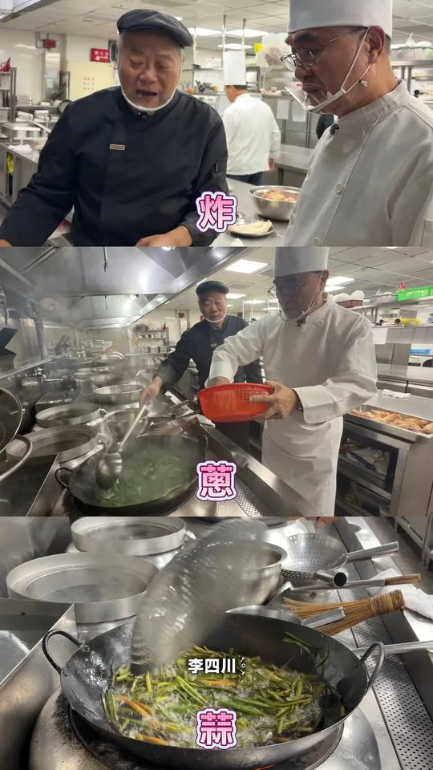

何欣純a_chun1973
@a_chun1973:謝謝大家！ 用阿妹的歌來表達心境： 你是我的姊妹，你是我的baby 不管相隔多遠！😘 你是我的姊妹，你是我的baby 珍愛這份感覺！❤️
Posts
@a_chun1973:謝謝大家！ 用阿妹的歌來表達心境： 你是我的姊妹，你是我的baby 不管相隔多遠！😘 你是我的姊妹，你是我的baby 珍愛這份感覺！❤️


@hammer__lee:第一次穿這麼漂亮的衣服，是針織女王 GIOIA PAN 潘怡良 設計師幫我設計的。 在北海岸時尚藝術季，不只吹海風，也讓我走路有風。 好看吧？

@schuanglawyer:恭祝瑤池金母聖誕千秋，祝福大家平安順遂、福慧增長！ 世杰到中壢慈惠堂、大坑慈慧慈惠堂、上大慈惠堂及中原紫雲禪寺分宮中壢玉玄宮，和鄉親們一起為母娘祝壽。 信仰凝聚人心，也牽起在地濃濃的人情味。每一次參與地方活動，不只是獻上祝福，更是第一線傾聽市民心聲的寶貴時刻，從一次次聊天分享中，聽見大家對地方、對未來、對美好生活的共同期待。 其中，中壢玉玄宮特別邀請13家弱勢機構、共500多位院生一起共襄盛舉，現場笑聲不斷、溫馨熱絡，展現母娘慈悲為懷、庇佑眾生的精神，讓需要關懷的朋友感受到社會的溫暖，這也是世杰投入公共事務、跟大家一起持續努力的意義❤️ 在這個殊勝的日子，誠心祈願母娘慈悲護佑、福澤眾生，願我們生活的桃園，平安、安定、越來越好！

企鵝阿爸「神秘小物」即將登場💖㊙️

現此時的八德興仁花園夜市💖


@pumashen:〖洋流好物 捐款常見問題解答〗 ⠀ 𝙌. 小物可以換嗎？ 𝙌. 沒有收到確認信件怎麼辦？ 𝙌. 如何變更寄送地址？ ⠀ 過去一週大家最常問的問題， 我們搜集起來， 今天一次整理解答給大家！

🌶️ 身為資深辣椒系選手，這題我應該很可以吧？ 辦公室同仁居然準備了五款常見辣椒醬，要我來場蒙眼盲猜大挑戰！ 究竟我這個「辣椒專家」是真材實料，還是辣到翻車？看下去就知道🔥 辣純派集合！


民眾陳情：永康區勝華街37巷水溝有臭味會積水…永康區水溝班已處理回報

0828受訪 #受訪 #象山公園 #運動文化 #無菸城市 #普發二萬 #樹蔭公平

中元普渡祈平安🙏 心存善念、感恩祈福 🍎 今天是中元節，走在大街小巷，處處可見家家戶戶、公司行號準備豐富的供品虔誠普渡，展現臺灣民間最溫暖、最具人情味的慈悲精神，啟臣服務處也一同誠心普渡！ 中元節不僅是傳統習俗，更是一個懂得敬天謝地、感念先人的日子。在這個充滿感恩的時刻，讓我們「心存善念、口說好話、廣行好事」，將這份慈悲化為對周遭每個人最真誠的關懷。 啟臣虔誠祈求風調雨順、國泰民安，保佑大臺中百業興旺、也祝福所有市民好朋友闔家平安、健康順遂、福氣滿滿🙏✨ #中元節 #中元普渡 #心存善念 #感恩祈福 #臺中平安 #幸福臺中

@pumashen:今天謝謝永春市場的大家！ 很不好意思的是 今天比預期的更多人 所以有些沒有合照到 或者沒有簽到 後來攤商也來不及進去掃 我知道有不少人先進去消費 真的對大家很不好意思！ 我一定會再回來 跟市場裡的朋友聊聊！ Orz
@pumashen:謝謝團隊的小驚喜～ 大家追蹤 是想留言嗎哈哈哈

@pumashen:今天參加延鳳的水上親子派對 本來要問各位小朋友 喜不喜歡喝鮮乳 結果….. 根本不給問！

何欣純為什麼想參選台中市長？ 我看到區域發展不均衡的問題，平平都住在台中，怎麼過的生活不一樣？ 一個城市不該因為住在哪裡，決定了一個人的生活品質。 一個強烈的念頭：台中值得更好的未來！

炸、燙、滷，三道工序，跳一道就不對味。 新北的好味道，都是老師傅一手一手做出來的。 這一天我換一頂帽子，該做的一樣要做完。


翁曉玲妳也是女性，何必為了蹭熱度，來傷害一位完全不認識妳的女性朋友呢？ 昨天大家在狂傳這一段話，讓我更不捨幸妤，一個對政治沒有興趣，連翁曉玲是誰都不知道的人，為什麼會莫名其妙中「翁曉玲」的槍呢？ 幸妤為了保護自己的小孩，展現媽媽的本能，何錯之有？為什麼翁曉玲要用「扁家就是愛錢」來傷害一位為母則強的媽媽呢？而且幸妤只是要追回合法贈與給自己小孩的錢，翁曉玲真的不用這麼迫不及待地傷害對政治毫無興趣而且根本不知道「翁曉玲」是誰的陳幸妤。 圖片來源：東森新聞
今晚龍介直播暫停一次 各位市民朋友我們下集見

民眾陳情：永康區勝華街37巷水溝有臭味會積水…永康區水溝班已處理回報

謝謝幸妤的支持，我會好好珍惜這一份支持，為台南繼續打拼。 我也要替幸妤加油！我也替幸妤感到非常驕傲，可以栽培出三個非常優秀的寶貝，最難得的是幸妤可以保有永遠的真性情，永遠做自己喜歡做的事。

中元普渡祈平安🙏 心存善念、感恩祈福 🍎 今天是中元節，走在大街小巷，處處可見家家戶戶、公司行號準備豐富的供品虔誠普渡，展現臺灣民間最溫暖、最具人情味的慈悲精神，啟臣服務處也一同誠心普渡！ 中元節不僅是傳統習俗，更是一個懂得敬天謝地、感念先人的日子。在這個充滿感恩的時刻，讓我們「心存善念、口說好話、廣行好事」，將這份慈悲化為對周遭每個人最真誠的關懷。 啟臣虔誠祈求風調雨順、國泰民安，保佑大臺中百業興旺、也祝福所有市民好朋友闔家平安、健康順遂、福氣滿滿🙏✨ #中元節 #中元普渡 #心存善念 #感恩祈福 #臺中平安 #幸福臺中


Joanne Yen is truly fearless—not only does she fight for our community, she’s even bold enough to...

@schuanglawyer:在桃園觀光夜市，巧遇中壢國小的同學，是我們當年的班長！

@schuanglawyer:企鵝阿爸「神秘小物」即將登場💖㊙️

週六的夜市，遇到6歲的「杰伴小企鵝」🐧💖 今晚來到八德興仁花園夜市，週末夜晚人潮滿滿、美食香氣一路飄散，越晚越熱鬧！最驚喜的是遇到目前年紀最小的杰伴，6歲妹妹特別拿著Q版的我和企鵝插圖來找我簽名，真的太可愛了！ 興仁花園夜市除了有各式各樣的美食，也有不少遊戲攤位，是很多爸媽週末帶孩子來逛逛、放電的好去處💯 謝謝興仁花園夜市總經理吳仕明、市議員呂林小鳳、許家睿 Hsu Chia-Jui議員、蔡永芳 • 阿芳議員候選人一起逛夜市，也謝謝今晚每一位攤商老闆、朋友的加油與握手打氣💪🏻 繼續一步一腳印，把大家的聲音放在心上！心八德，動起來💖明晚桃園夜市見！

Councilor Chang Wen-chieh prepared a giant bowl of shaved ice for me, symbolizing the weight of m...

[Otter Mom's Little Talks] Can I Be Your Dog? | Adopt Don't Shop | Animal Friendly | Children's P...

周末行程來囉，這禮拜不用畫烏龜，暑假尾聲玩水去！ ⠀ 8/29（六） ⠀ 09:00 📍東湖五分市場 ⠀ 8/30（日） ⠀ 09:00 📍永春市場 ⠀ 10:00 林延鳳議員＿i鳳水上派對親子活動 📍七星公園


@chen_tingfei:謝謝幸妤的支持，我會好好珍惜這一份支持，為台南繼續打拼。 我也要替幸妤加油！我也替幸妤感到非常驕傲，可以栽培出三個非常優秀的寶貝，最難得的是幸妤可以保有永遠的真性情，永遠做自己喜歡做的事。

謝謝幸妤的支持，我會好好珍惜這一份支持，為台南繼續打拼。 我也要替幸妤加油！我也覺得幸妤非常驕傲，可以栽培出三個非常優秀的寶貝，最難得的是幸妤可以保有永遠的真性情，永遠做自己喜歡做的事。